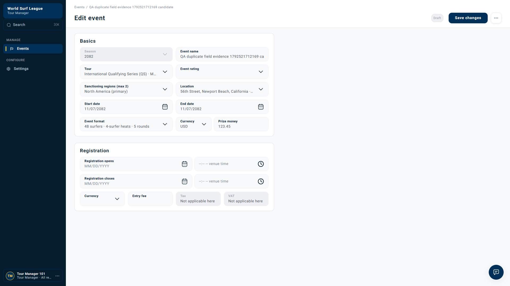
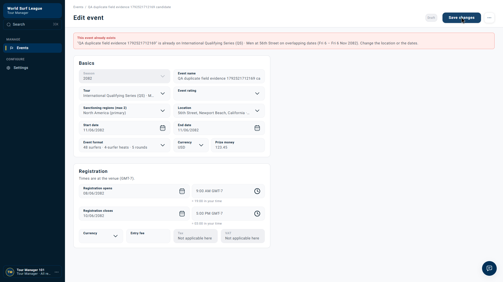

Tour Manager · Event validation · AI-121 / ADD-78
Duplicate event errors show a banner but leave conflicting fields unmarked
Fresh UI reproduction · 20 October 2026 · WSL dev
Draft bug report Suggested priority: Medium No Jira ticket created
Reproduced. A manager changes an event's dates to match another event at the same location and tour. Saving correctly returns a duplicate error, but only the banner explains the problem. The Location, Start date and End date inputs show no red highlights or inline duplicate messages.
Watch the issue
Captioned recording of the real dev form: inspect original dates → change dates → Save changes → inspect the banner and unmarked fields. Two isolated Drafts were created by API before recording. The actual save was submitted through the UI.
Before — no collision


The candidate initially runs on November 7. The existing event runs on November 6.
After — banner only


The banner says to change the location or dates, but those inputs remain visually unmarked. Open the screenshot to inspect it at full size.
| Behavior | Expected | Observed |
|---|---|---|
| Duplicate protection | Reject conflicting save | PASS — HTTP 409 |
| Explanation | Explain the duplicate | PASS — descriptive banner |
| Field guidance | Highlight conflicting inputs and show inline messages | FAIL — normal field appearance; fields: {} |
| Persistence | Do not save the rejected edit | PASS — readback still has November 7 dates |
Steps to reproduce
- Prepare two valid Draft events in the same season, tour and location, on November 6 and November 7.
- Open the November 7 event in Edit event.
- Set Start date and End date to November 6, matching the other event.
- Click Save changes.
- Inspect the error banner and the Location, Start date and End date inputs.
Expected: Keep the duplicate explanation and mark the conflicting inputs with inline guidance.
Actual: Only the banner describes the collision. The conflicting inputs have no error highlights or inline messages.
Captured API response
This is the actual response to the UI save, not a reconstructed example.
PUT https://api.dev.worldsurfleague.com/api/tour-manager/events/01a15a9e-b7ac-70e0-8514-3a9aa6564dab
HTTP 409
{
"title": "This event already exists",
"message": "\"QA duplicate field evidence 1792521712169\" is already on International Qualifying Series (QS) · Men at 56th Street on overlapping dates (Fri 6 – Fri 6 Nov 2082). Change the location or the dates.",
"reason": "competition.event_duplicate",
"fields": {},
"retryable": false,
"code": "duplicate",
"conflict": {
"id": "01a15a9e-b59b-7432-b8f7-fc3453b11250",
"name": "QA duplicate field evidence 1792521712169"
}
}Response JSON · Complete evidence data · Download descriptive report
Technical analysis
The inspected BFF duplicate branch in tour_manager_events.py:_written creates HTTP 409 with a message and conflict reference, but does not populate field errors. The frontend event-editor.tsx:refusedFields maps errors only for HTTP 422. Both sides therefore need to support the duplicate-error field contract; adding a field map to the response alone will not fix the frontend.
Local source inspection explains the observed behavior; the exact deployed source revision was not verified. No application fix was made.
Impact and acceptance criteria
Managers must find and correct the conflicting inputs themselves. This creates unnecessary trial and error, although duplicate protection remains effective.
- Return actionable field errors for the inputs responsible for a duplicate collision.
- Display field highlights and inline messages while retaining the explanation banner.
- Clear/recalculate errors when the conflicting values change; allow a valid corrected save.
- Preserve ordinary 422 validation and duplicate prevention.
- Verify both New event and Edit event paths with direct UI assertions.
Run details and scope
Captured at 2026-10-20T18:42:21.127Z. Season 2082; existing event 01a15a9e-b59b-7432-b8f7-fc3453b11250; edited event 01a15a9e-b7ac-70e0-8514-3a9aa6564dab. The rejected save left the edited event at 2082-11-07 / 2082-11-07.
The October 19 ADD-78 API run established the same empty-field-map issue for creation. This new recording directly establishes the Edit event UI behavior. The earlier context-only recording is superseded by the captioned reproduction above.
No Jira ticket created. Isolated QA fixtures were used; existing imported events were not edited.